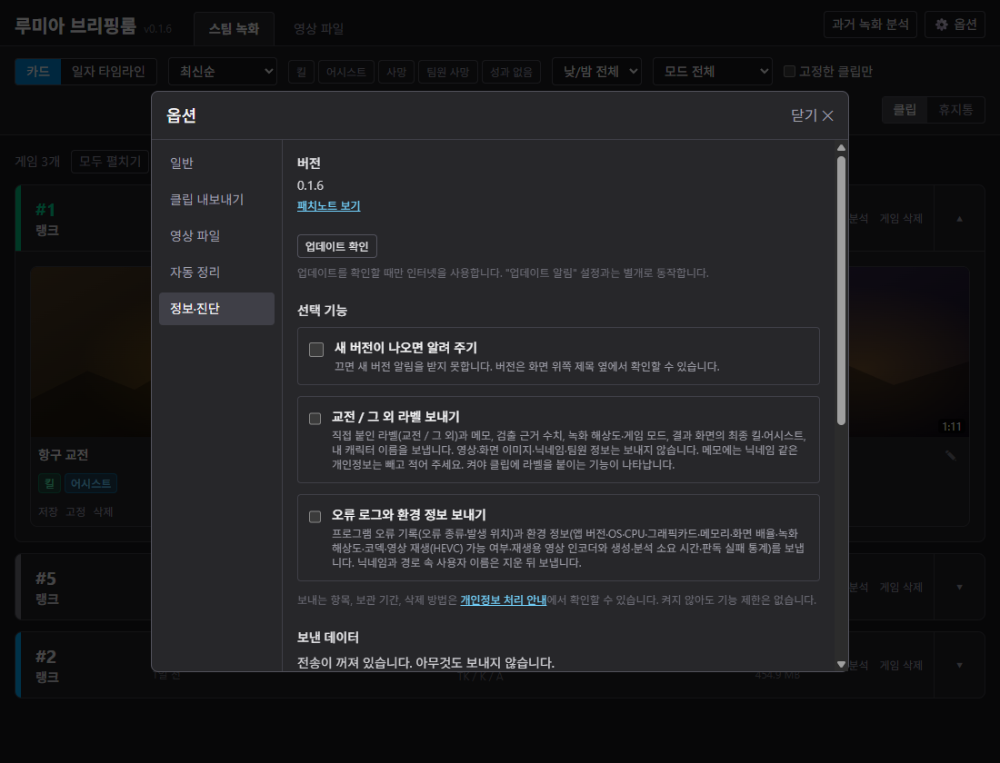
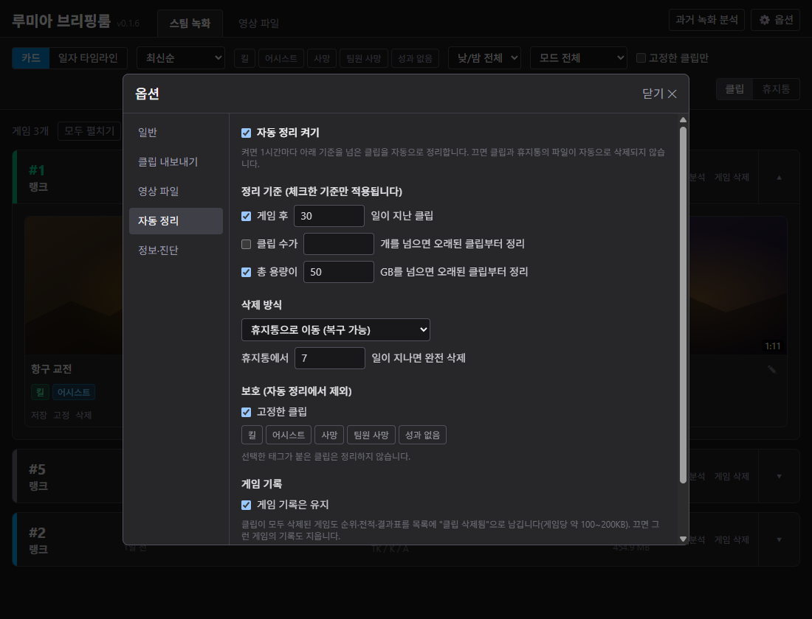

루미아 브리핑룸
스팀 녹화나 영상 파일에서 킬·어시스트·데스가 있는 교전 장면만 자동으로 잘라 줍니다. 만들어진 클립은 열람 화면에서 바로 볼 수 있습니다.
|
방법 1 · 자동
스팀 녹화
게임이 끝나면 알아서 분석해 클립을 만듭니다.
|
방법 2 · 직접 추가
영상 파일
몇 시간짜리 긴 영상에서도 교전 구간만 뽑아 줍니다.
|
TIMELINE · 분석하면 이렇게 나뉩니다
■ 교전 구간 → 클립으로 저장 ■ 사냥·이동 등 그 외 → 건너뜀
플랫폼
Windows |
가격
무료 |
소스
공개 (MIT) |
01
소개
게임을 건드리지 않습니다
게임 프로세스·메모리·입력·네트워크에 손대지 않고, 스팀이 이미 저장한 녹화 파일만 읽습니다. 안티치트와 무관하게 동작합니다.
내 PC 안에서 동작합니다
검출·클립 생성·열람은 인터넷 없이 됩니다. 네트워크는 직접 켠 부가 기능(업데이트 알림, 라벨·오류 로그 전송)에만 쓰고, 기본은 전부 꺼져 있습니다.
안내
이터널 리턴의 개발·운영사 님블뉴런과 무관한 비공식 팬 제작 도구입니다. 님블뉴런의 승인이나 후원을 받지 않았습니다.
02
주요 기능
자동 클립 생성
게임이 끝날 때마다 알아서 분석해 교전 구간을 클립으로 만듭니다. 게임 하나에 2~6분 걸립니다.
태그와 필터
클립마다 킬·어시스트·데스 태그가 붙고, 게임 한 줄에 순위·캐릭터·K/A와 지역 이름이 표시됩니다. 목록에서 태그로 걸러 볼 수 있습니다.
영상 파일 탭
OBS 같은 녹화 프로그램으로 찍은 영상 파일을 넣으면 스팀 녹화와 같은 방식으로 교전만 뽑아 줍니다. 몇 시간짜리 긴 영상도 됩니다.
자르기와 내보내기
클립의 앞뒤를 다듬고, 원하는 폴더에 파일 이름을 정해 내보낼 수 있습니다.
자동 정리
기간·용량 기준을 넘은 클립을 정리합니다. 휴지통으로 보내 복구할 수 있고, 고정한 클립은 지우지 않습니다.
03
설치와 사용
1스팀 백그라운드 녹화 켜기
스팀 → 설정 → 게임 녹화 → 백그라운드 녹화를 켭니다. 녹화 시간(버퍼)은 2시간 이상을 권합니다. 짧으면 게임이 끝나기 전에 앞부분이 지워져 클립을 만들 수 없습니다.
2설치 파일 받아 실행
아래 다운로드 버튼에서 LumiaBriefingRoom-x.y.z-setup.exe를 받아 실행합니다. 관리자 권한은 묻지 않고, 내 계정 폴더에만 설치됩니다. 설치에 약 400MB가 필요합니다.
3첫 실행 화면 확인
스팀 녹화 폴더와 해상도를 자동으로 찾아 보여 줍니다. 폴더를 못 찾았다면 직접 고르기로 video 폴더를 선택하고 시작하기를 누릅니다.
4이터널 리턴 한 판 하기
설치가 끝나면 프로그램이 작업표시줄 오른쪽 아래(시계 옆)에 파란 원 안에 재생 삼각형이 있는 아이콘으로 떠 있습니다. 안 보이면 그 옆 ∧ 모양 버튼(숨겨진 아이콘 표시)을 눌러 보세요. 게임을 끝내고 로비로 나오면 알아서 분석을 시작합니다.
5클립 보기
아이콘을 눌러(또는 오른쪽 클릭) 루미아 브리핑룸 열기를 누르면 열람 화면이 브라우저로 열립니다.
주의 · 파란 경고창
설치할 때 Windows의 PC 보호(SmartScreen) 경고가 뜹니다. 개인이 만든 프로그램이라 코드 서명 인증서가 없어서 그렇습니다. 추가 정보 → 실행을 누르면 진행됩니다. 백신이 오탐할 수 있으며, 릴리스 페이지에 파일 해시(SHA-256)와 VirusTotal 검사 결과 링크가 올라옵니다. Windows Defender가 설치 파일을 위협으로 탐지하는 경우의 대처법은 맨 아래 번외에 적어 두었습니다.
업데이트는 앱의 옵션 → 정보·진단 → 업데이트 확인에서 합니다. 제거는 Windows 설정의 앱 목록에서 하며, 만들어진 클립은 지워지지 않고 남습니다(기본 위치: 내 비디오\LumiaBriefingRoom).
05
데이터 수집
이 프로그램은 화면 인식으로 킬·어시스트, 지역, 교전 여부를 읽어 냅니다. 그런데 게임 화면은 해상도·모니터·UI 설정에 따라 조금씩 다르게 보여서, 다양한 PC에서 나온 데이터가 많을수록 판독 정확도가 올라갑니다. 그래서 원하는 분에 한해 아래 세 가지를 보낼 수 있게 했습니다.
중요 · 기본은 전부 꺼짐
첫 실행 화면이나 옵션에서 직접 켠 항목만 보냅니다. 켜지 않아도 기능 제한은 없습니다.
교전 / 그 외 라벨
직접 붙인 라벨과 메모, 검출 근거 수치, 녹화 해상도·게임 모드, 결과 화면의 최종 킬·어시스트, 내 캐릭터 이름. 메모는 그대로 전송되니 닉네임 같은 정보는 적지 마세요. 켜야 클립에 라벨을 붙이는 기능이 나타납니다.
오류 로그와 환경 정보
프로그램 오류 기록, 앱 버전, OS, CPU·그래픽카드·메모리, 녹화 해상도·코덱, 판독 실패 통계. 닉네임과 경로 속 사용자 이름은 지운 뒤 보냅니다.
진단 정보 (버튼을 누른 그 순간에만)
문제가 생겼을 때 직접 눌러 한 번만 보냅니다. 보낼 내용을 먼저 미리 볼 수 있습니다.
보내지 않는 것
영상, 썸네일, 결과표 이미지, 화면 조각은 어떤 경우에도 보내지 않습니다. 닉네임, 팀원 정보, 클립 제목, 파일 경로 원문, 스팀·게임 계정 정보도 보내지 않습니다.
끄는 방법
옵션(⚙) → 정보·진단 탭에서 항목별로 끌 수 있습니다. 이미 보낸 데이터는 같은 탭의 보낸 데이터 삭제 요청을 누르면 서버에서 모두 삭제되고 전송도 꺼집니다.
| 첫 실행 화면 · 데이터 전송은 전부 꺼진 상태로 시작 |
 |
| 옵션 → 정보·진단 · 언제든 끌 수 있습니다 |
 |
보관과 보안
오류 로그·진단 정보는 받은 뒤 90일이 지나면 자동 삭제됩니다. 서버는 국내(OCI 춘천)에 있고 HTTPS로만 받으며, 접속 IP는 로그로 저장하지 않습니다. 자세한 내용은 앱 안의 개인정보 처리 안내와 저장소의 docs/privacy.md에 있습니다.
번외
Windows Defender가 위협으로 탐지할 수 있습니다
설치하거나 실행할 때 Windows Defender(Windows 보안)가 "Trojan:Win32/Wacatac.C!ml" 같은 이름의 심각 위협으로 탐지해 파일을 격리할 수 있습니다. 설치 중이라면 "Unable to execute file ... CreateProcess failed; code 225" 오류창이 뜨기도 합니다. 저도 직접 겪었습니다. 놀라실 수 있어서 미리 적어 둡니다.
이 프로그램은 악성코드가 아닙니다
● VirusTotal의 여러 백신 엔진 검사를 통과했습니다(v0.1.5 확인). 릴리스마다 자동으로 검사하고, 결과 링크가 릴리스 페이지에 올라옵니다.
● 소스 코드가 전부 공개되어 있고, 배포 파일은 공개된 코드를 GitHub에서 자동으로 빌드한 것입니다. 원하시면 직접 읽어 보거나 빌드하실 수 있습니다.
● 릴리스 페이지의 SHA-256 값과 받은 파일의 해시가 같은지 비교해 변조 여부를 확인할 수 있습니다.
왜 탐지되는 걸까요?
정확한 이유는 Defender가 알려 주지 않아 추측입니다. 이름 끝의 !ml은 특정 악성코드와 일치했다는 뜻이 아니라, 머신러닝이 "악성 프로그램과 비슷해 보인다"고 추정했다는 표시입니다. 이 프로그램은 다음처럼 악성 프로그램과 겹치는 동작이 있습니다.
● 백그라운드에서 계속 실행되며 스팀 녹화 폴더를 감시합니다.
● Windows 시작 시 자동으로 실행되도록 등록할 수 있습니다.
● 영상 처리를 위해 다른 프로그램(ffmpeg)을 실행하고, 새 버전을 받아 설치기를 실행합니다.
● 개인 개발자라 코드 서명 인증서가 없고, 아직 사용하는 사람이 적은 새 파일입니다.
이 조합 때문에 Windows가 의심하는 것으로 보고 있으며, 사용자가 늘고 코드 서명을 받게 되면 줄어들 것으로 예상합니다. 코드 서명 방법은 알아보고 있습니다.
탐지됐을 때 허용하는 방법
코드를 직접 확인했거나 위 근거로 판단이 서신다면 다음과 같이 진행하세요.
1. 작업표시줄 → Windows 보안 → 바이러스 및 위협 방지 → 보호 기록을 엽니다.
2. 탐지된 항목(루미아 브리핑룸 관련)을 눌러 펼친 뒤, 작업 옵션에서 "디바이스에서 허용"을 고르고 작업 시작을 누릅니다.
3. 설치가 중간에 실패했다면 설치 파일을 다시 실행합니다. 허용이 적용되기까지 잠시 걸려 바로는 같은 오류가 날 수 있으니, 몇 분 뒤 다시 시도해 보세요.
격리 후 제거를 눌렀다면 복원하거나, 새로 받은 설치 파일로 다시 설치하면 됩니다. 설정과 클립은 그대로 남습니다.
믿기 어렵거나 찜찜하시면 설치하지 않으셔도 됩니다. 직접 빌드하는 방법은 저장소의 README에 있고, 의심스러운 점은 언제든 Issues로 물어봐 주세요.